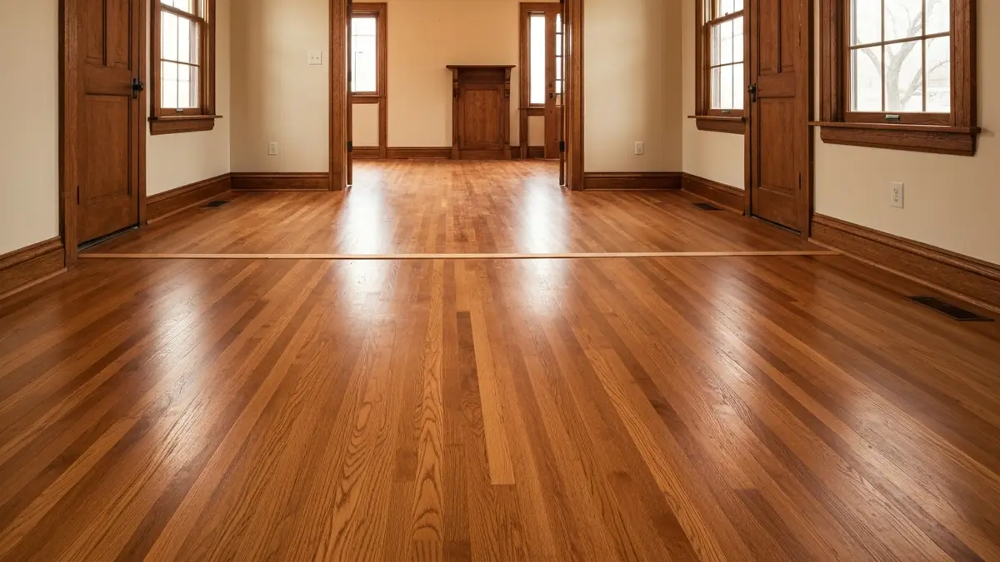

Council Bluffs is a city of approximately 63,000 residents in Pottawattamie County, Iowa, sitting directly across the Missouri River from Omaha. Steeped in Lewis and Clark heritage — the Corps of Discovery held their famous council with the Otoe and Missouri tribes on the bluffs here in 1804 — the city blends deep American history with a modern metro lifestyle. Council Bluffs is known for its historic downtown district along West Broadway, its thriving casino and entertainment corridor, and landmarks like the Union Pacific Railroad Museum and the Bob Kerrey Pedestrian Bridge connecting Iowa to Nebraska. The city's housing ranges from beautifully preserved Victorian and Craftsman homes in the historic neighborhoods near Bayliss Park to mid-century ranches and newer subdivisions in the western and southern parts of the city. Elkhorn Hardwood provides NWFA-certified hardwood floor installation and refinishing throughout Council Bluffs, bringing our licensed, insured expertise across the river with no additional travel charge. Whether you are restoring original hardwood in a century-old home or installing new wide-plank floors in a modern build, our team delivers the same quality Council Bluffs homeowners expect.

Our Hardwood Flooring Process
- Free In-Home Consultation — We visit your Council Bluffs home to assess your floors and discuss options.
- Wood Selection — Choose from oak, maple, walnut, hickory, and other premium hardwood species.
- Professional Installation or Sanding — Expert installation of new floors or precision sanding of existing hardwood.
- Staining & Finishing — Custom stain colors and durable polyurethane or oil finishes applied.
- Final Walkthrough — We inspect every detail and ensure you're completely satisfied with the result.
Why Council Bluffs Homeowners Trust Elkhorn Hardwood
- Historic home restoration specialists — Council Bluffs' Victorian, Craftsman, and early 20th-century homes deserve expert care. We restore original hardwood floors with meticulous attention to preserving period character.
- NWFA-certified professionals — Our National Wood Flooring Association certification ensures every Council Bluffs project meets the highest industry standards for installation, sanding, and finishing.
- Licensed and fully insured — Full liability coverage and workers' compensation protect your Council Bluffs home and investment from start to finish.
- No extra travel charge — Council Bluffs is part of our regular service area. We cross the Missouri River daily and treat every Iowa project with the same priority and pricing as our Nebraska work.

Frequently Asked Questions — Hardwood Floor Installation and Refinishing in Council Bluffs
Do you serve Council Bluffs even though you are based in Nebraska?
Yes. Council Bluffs is just across the Missouri River from Omaha, and we serve the entire Council Bluffs area as part of our regular service territory. Our team makes the short drive across the river daily for projects in Council Bluffs, and there is no additional travel charge. We treat Council Bluffs homeowners with the same priority scheduling and service quality as any of our Nebraska clients.
How much does hardwood floor installation cost in Council Bluffs, IA?
Hardwood floor installation in Council Bluffs typically costs $8 to $15 per square foot for new installation and $4 to $8 per square foot for refinishing existing hardwood. The final cost depends on wood species, square footage, and project complexity. Most Council Bluffs homeowners invest between $3,500 and $12,000 for a full hardwood flooring project. Call (719) 215-8962 for a free in-home estimate.
Can you restore hardwood floors in historic Council Bluffs homes?
Absolutely. Council Bluffs has a rich architectural heritage with many homes dating to the late 1800s and early 1900s, particularly in the historic downtown and South Main Street districts. We specialize in restoring original hardwood floors in older homes, carefully sanding away decades of wear while preserving the character of the original wood. We can match historic stain colors or update the finish to complement a modern renovation. Our dustless sanding equipment keeps your home clean throughout the process.
Need Hardwood Flooring in Council Bluffs? Call Now
We're your local hardwood flooring experts serving Council Bluffs and all surrounding areas.
📞 Call (719) 215-8962